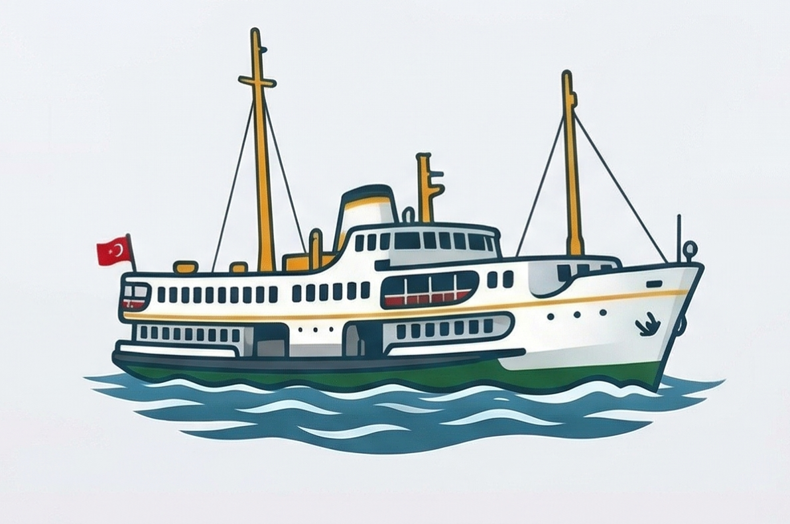

Kıyıya kadar vatandaşız.
2026 Bahar Tarifesi ile kaldırılan deniz seferleri Kınalıada ve Burgazada sakinlerini iki yönlü abluka altına aldı. Gece dönemiyoruz, sabah çıkamıyoruz.
2026 Bahar Tarifesi'nde Mavi Marmara Kooperatifi, sessiz sedasız iki seferi kaldırdı. Ada halkı bunu sonradan öğrendi.
Bostancı'dan Kınalıada'ya son sefer 21:45'teki Şehir Hatları ring seferidir (22:10 varış). Bunu kaçıranlar 2 saat 15 dakika ile 4 saat 15 dakika arasında beklemek zorunda. 23:00 seferi 2026 Bahar Tarifesi ile kaldırıldı.
06:30 Kınalıada→Bostancı sabah seferi de kaldırıldı. Adada yaşayan çalışanlar artık işlerine zamanında yetişemiyor. Ada halkı hem gece evine dönemiyor hem sabah işe gitemiyor.
Aynı ilçedeki Büyükada ve Heybeliada sakinleri gece 22:00 ve 23:00 seferlerinden yararlanabiliyor. Kınalıada ve Burgazada sakinleri bu haktan mahrum bırakılıyor. Aynı deniz, aynı ilçe, farklı hizmet.
Kınalıada seferlerinin %69'u özel bir kooperatife ait. Şehir Hatları günde yalnızca 5 sefer düzenliyor. Kamu denetimi olmayan ticari kararlar, adanın ulaşım hakkını belirliyor.
Bu kampanyanın gücü sen ve komşundasın. Vapura bin — sayfayı paylaş.

👆 Vapura tıkla ve paylaşım seçeneklerini gör
Her rakamın arkasında bir sakin, bir sabah, bir yolculuk var.
Büyükada ile Kınalıada aynı Adalar ilçesine bağlı. Ama sefer tarifesi bambaşka bir hikâye anlatıyor.
| Kriter | Kınalıada / Burgazada | Büyükada / Heybeliada |
|---|---|---|
| Günlük toplam sefer | ~16 (11'i özel kooperatife ait) | 16 (kamusal güvenceli) |
| Gece 22:00 seferi | Yok | Var |
| Gece 23:00 seferi | Kaldırıldı — Bahar 2026 | Var |
| Sabah 06:30 seferi (ada→şehir) | Kaldırıldı — Bahar 2026 | Mevcut |
| Şehir Hatları günlük seferi | 5 sefer | Daha fazla seçenek |
| Son gece seferi | 21:45 (Kınalıada 22:10 varış) | 23:00 |
Karmaşık değil. Somut, ölçülebilir, gerçekleştirilebilir talepler.
Kaldırılan 06:30 Kınalıada→Bostancı sabah seferinin bir an önce yeniden hizmete alınması. Ada sakinlerinin çalışma hayatına katılımının güvencesidir.
Bostancı–Kınalıada hattında kaldırılan 23:00 seferinin bir sonraki tarife güncellemesiyle yeniden tarifeye alınması.
Kınalıada ve Burgazada için kamu güvenceli asgari sefer sıklığı standardının yasal zemine oturtulması.
Bu iki adanın yalnızca ticari kriterlere göre değil, kamu hizmeti yükümlülüğü çerçevesinde değerlendirilmesi.
Operatörlerin sefer iptali ve hat kaldırma kararlarının TDİ/Bakanlık onayına tabi tutulması.
Tarife değişikliklerinden önce Kınalıada ve Burgazada sakin temsilcileriyle önceden görüşme yapılması.
Bu kampanya kurumsal değil, halk tabanlı. Gücü sen ve çevren.
Change.org'daki imza kampanyasına katıl. Topladığımız imzaları yetkililere birlikte ileteceğiz.
İmzaya GitBu sayfayı Instagram, WhatsApp, Facebook ve Twitter'da paylaş. Haberi duymayan biri var mı? Ulaş.
Ada bağlantınla bu sorunu yaşadıysan hikayeni paylaş. Birinin sesi, herkese ulaşır.
Sesini Duyurİmzanı ekle, kurumlarla birlikte bu sesi büyütelim. Her imza bir adım.
Change.org'da İmzalaİmza kampanyası linki yakında aktif olacak.
Güncel bilgi için @otekiadalar'ı takip et.
Bu adalarda yaşıyor, çalışıyor ya da bu adalara bağlı biri misin? Hikayeni paylaş — onu da duyuralım.
Akşam bir arkadaşımla buluştum, eve dönmek için Bostancı'ya geçtim. 21:45'i birkaç dakika kaçırmışım. Sonraki sefer 02:00. Kafede oturup beklemenin başka yolu yoktu.
06:30 seferinin kalktığını o sabah işe gidemeyince öğrendim. Patronuma nasıl anlattığımı bilen var mı? "Ada sakini" demek yetmedi artık.
Formdan gelen hikayeler moderasyon sonrası bu sayfada ve @otekiadalar hesabında yayımlanabilir. Dilersen adını gizleyebilirsin.